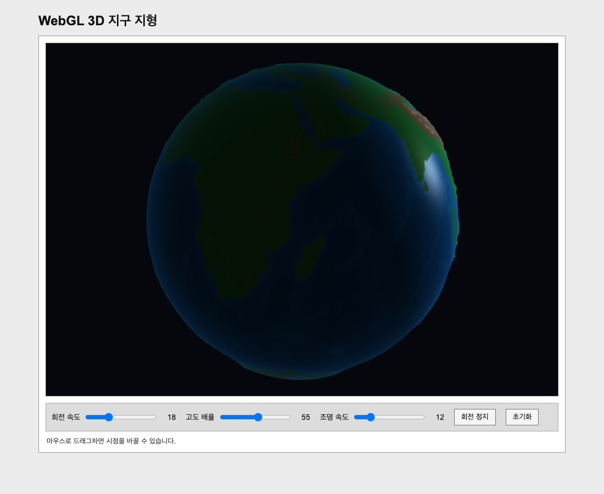

| 항목 | 내용 |
|---|---|
| 학번 | 32232182 |
| 이름 | 석민 |
| 제출일 | 2026년 11월 27일 |
| GitHub | https://github.com/stone0min/webgl-earth-terrain |
이 과제의 목표는 WebGL2로 지구를 3차원 모델링하고, 위도와 경도에 연결된 실제 고도값을 구 표면의 변위로 바꾸어 지형을 표현하는 것이다. 지구는 계속 자전하며 광원도 별도의 속도로 이동한다. 사용자는 회전 속도, 고도 배율, 조명 속도를 바꾸고 마우스로 관찰 방향을 조절할 수 있다.
| 요구 사항 | 구현 내용 |
|---|---|
| 3D 지구 모델링 | 위도 180분할, 경도 360분할의 구 메시를 WebGL2 삼각형으로 생성 |
| 고도 정보 사용 | NOAA ETOPO 2022 Ice Surface 고도값을 1도 간격으로 추출하여 사용 |
| 위도 경도 좌표 | 각 메시 정점의 위도와 경도로 고도 격자를 조회하고 쌍선형 보간 |
| 회전 운동 | 시간 간격을 누적해 Y축 회전 행렬을 매 프레임 갱신 |
| 조명 변화 | 광원 위치를 원 궤도로 이동시키고 주변광 확산광 정반사광 계산 |
| 사용자 조작 | 회전 속도 고도 배율 조명 속도 정지 초기화 마우스 드래그 제공 |
프로그램은 데이터 준비, 구 메시 생성, GPU 전송, 셰이더 계산, 애니메이션 갱신 순서로 실행된다. 원본 CSV는 제출 프로젝트 안에 보관하고, 브라우저가 빠르게 읽을 수 있도록 16비트 정수 배열로 변환한 파일을 함께 사용한다.
위도 φ와 경도 θ를 라디안으로 바꾼 뒤 단위 구의 좌표를 계산했다. 위도는 -90도에서 90도, 경도는 -180도에서 180도 범위로 나누었다. 인접한 네 정점을 두 개의 삼각형으로 연결하므로 전체 표면이 연속된 삼각형 메시가 된다.
180 × 360 격자를 사용할 때 정점은 181 × 361개가 만들어진다. 인덱스 버퍼를 사용해 여러 삼각형이 같은 정점을 다시 사용하도록 구성했다.
NOAA NCEI의 ETOPO 2022 60 arc-second Ice Surface 자료를 사용했다. 이 자료는 전 지구의 육지 지형과 해저 지형을 미터 단위로 제공한다. ERDDAP 요청에서 위도와 경도 방향의 stride를 60으로 지정해 약 1도 간격의 180 × 360 격자를 얻었다.
| 속성 | 값 |
|---|---|
| 자료명 | ETOPO 2022 v1 60 arc-second Global Ice Surface |
| 제공 기관 | NOAA National Centers for Environmental Information |
| 수평 좌표계 | WGS 84 지리 좌표계 EPSG 4326 |
| 수직 기준 | EGM2008 EPSG 3855 |
| 고도 단위 | meter |
| 프로젝트 표본 간격 | 위도 1도 경도 1도 |
| 표본 수 | 64,800개 |
구 메시의 정점이 ETOPO 표본과 정확히 같은 위치에 놓이지 않을 수 있으므로 주변 네 고도값을 쌍선형 보간했다. 경도는 0도와 360도 경계를 순환하도록 처리했고 위도는 자료 범위 안으로 제한했다. 보간한 고도는 지구 반지름에 비해 매우 작기 때문에 화면에서는 고도 배율을 적용한다.
육지는 8,849 m를 기준으로 정규화하고 해저는 별도 깊이 비율로 정규화했다. 고도 배율 슬라이더가 0이면 완전한 구가 되고 값을 올리면 산맥과 해저 굴곡이 강조된다.
ERDDAP에서 받은 CSV의 각 행은 위도, 경도, 고도 순서다. build-data.js는 고도를 반올림해 Int16Array로 저장한 다음 Base64 문자열로 변환한다. 브라우저는 etopo-data.js를 읽고 다시 Int16Array로 복원한다. 원본 CSV 약 3 MB를 매번 파싱하지 않기 때문에 초기 실행 시간이 줄어든다.
각 정점에는 기본 위치, 법선, 정규화된 고도, 육지 여부를 저장한다. 정점 셰이더의 location 0부터 3까지 네 속성을 연결했고, 인덱스 버퍼에는 삼각형을 이루는 정점 번호를 저장했다. 깊이 검사를 켜서 지구 뒷면이 앞면 위에 그려지지 않게 했다.
| 속성 | 구성 | 용도 |
|---|---|---|
| aPos | vec3 | 고도 적용 전 단위 구 좌표 |
| aNormal | vec3 | 조명 계산용 표면 법선 |
| aHeight | float | 정규화된 육지 고도 또는 해저 깊이 |
| aLand | float | 육지와 바다 색상 선택 |
정점 셰이더는 고도와 사용자가 지정한 배율로 정점을 구의 바깥쪽 또는 안쪽으로 이동시킨다. 프래그먼트 셰이더는 해저 깊이를 짙은 파랑에서 얕은 파랑으로, 육지 고도를 초록에서 갈색과 흰색으로 바꾼다. 텍스처 이미지를 붙이는 방식이 아니라 각 정점의 실제 고도값으로 색을 계산한다.
조명은 주변광, Lambert 확산광, Phong 방식의 정반사광을 합성했다. 확산광의 밝기는 법선 n과 광원 방향 l의 내적 max(dot(n, l), 0)으로 정한다. 광원이 지구 뒤쪽에 있으면 내적이 0에 가까워져 밤 영역이 어두워진다.
requestAnimationFrame이 전달하는 시각을 이용해 이전 프레임과의 시간 차를 계산한다. 지구 회전각과 광원 회전각은 서로 다른 속도로 누적되므로 지구가 회전하는 동안 낮과 밤의 경계도 계속 변한다.
세 개의 슬라이더는 회전 속도, 고도 배율, 조명 속도를 변경한다. 회전 정지 버튼은 지구의 자전만 멈추며 광원 이동은 계속된다. 초기화 버튼은 시점과 속도를 처음 값으로 되돌린다. 캔버스에서 포인터를 드래그하면 yaw와 pitch가 바뀌어 지구를 원하는 방향에서 볼 수 있다.
Chrome의 WebGL2 환경에서 프로그램을 실행했다. ETOPO 고도값에서 계산한 해안선 때문에 아프리카, 남아메리카, 아시아 등의 윤곽이 나타났고 히말라야와 고원 지역은 갈색과 밝은색으로 표시되었다. 해저 깊이도 파란색 농도와 반지름 변화에 반영되었다.
| 검사 항목 | 확인 방법 | 결과 |
|---|---|---|
| WebGL2 초기화 | 페이지 실행 후 콘솔 오류 확인 | 정상 |
| 지구 회전 | 회전 속도를 0과 60으로 변경 | 속도 변화 확인 |
| 고도 변화 | 고도 배율을 0과 100으로 변경 | 표면 굴곡 변화 확인 |
| 조명 변화 | 조명 속도를 0과 60으로 변경 | 밝은 영역 이동 확인 |
| 회전 정지 | 정지 버튼을 두 번 선택 | 정지와 재시작 확인 |
| 시점 조절 | 캔버스를 상하좌우로 드래그 | 관찰 방향 변화 확인 |
| 초기화 | 값 변경 후 초기화 선택 | 초기 설정 복원 확인 |
실제 고도 데이터를 구 표면의 좌표와 직접 연결했기 때문에 대륙의 형태와 고도가 일관되게 나타났다. 회전과 광원 이동을 분리해 자전과 조명 변화를 동시에 확인할 수 있었고, 고도 배율을 조절해 거의 구형인 실제 지구와 지형을 강조한 화면을 비교할 수 있다.
프로젝트에서는 실행 속도와 파일 크기를 고려해 60 arc-second 원 자료를 1도 간격으로 표본화했다. 따라서 작은 섬이나 좁은 산맥은 원 자료보다 세부 정보가 줄어든다. 또한 지구 반지름에 대한 실제 고도 비율은 화면에서 거의 보이지 않으므로 사용자가 선택한 배율로 굴곡을 확대한다. 이 배율은 지형을 보기 위한 시각화 값이며 실제 축척과 다르다.
| 파일 | 역할 |
|---|---|
| index.html | 캔버스와 조작 화면 |
| style.css | 화면 배치와 기본 스타일 |
| app.js | 메시 생성 셰이더 행렬 조명 애니메이션 |
| etopo-data.js | 브라우저가 읽는 1도 간격 고도 배열 |
| data/etopo2022_1deg.csv | NOAA ERDDAP에서 추출한 원본 표본 |
| build-data.js | CSV를 Int16 고도 배열로 변환 |
| README.md | 실행법과 구현 설명 |
프로젝트 폴더에서 다음 명령을 실행한 다음 브라우저에서 http://localhost:8000을 연다. HTML 파일을 직접 열면 브라우저 보안 정책 때문에 일부 기능이 제한될 수 있으므로 로컬 웹 서버를 사용한다.
ChatGPT를 사용해 WebGL 구현 초안을 작성하고, 셰이더와 행렬 계산 오류를 점검했으며, 보고서의 구성을 정리했다. 또한 위도와 경도에 대응하는 주변 고도값을 찾는 과정, 쌍선형 보간, 육지와 해저 고도의 정규화, 정규화한 고도를 구의 반지름 변화로 바꾸는 계산식을 작성하고 검토할 때 AI 도구를 사용했다. AI 도구를 사용한 이유는 WebGL의 정점 버퍼와 셰이더 연결 과정 및 고도 계산 과정에서 발생할 수 있는 오류를 빠르게 찾고 구현 과정을 문서화하기 위해서다.
과제 요구 사항을 정리한 뒤 코드 초안을 만들었다. 브라우저에서 검은 화면이 나타나는 문제를 확인하고 이동 행렬의 원소 수 오류를 수정했다. 이후 직접 작성한 고도값 대신 NOAA ETOPO 2022 자료를 내려받아 적용하고, AI가 제안한 고도 계산 결과를 원 자료의 최솟값과 최댓값 및 주요 산맥과 해저 위치와 비교해 확인했다. 마지막으로 콘솔 오류와 조작 기능을 다시 확인하고 위경도 좌표 변환, 고도 보간, 정점 변위, 조명 내적 계산을 검토했다.